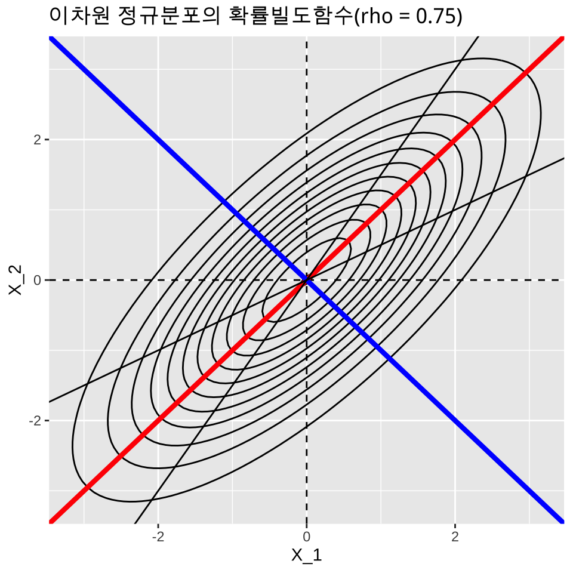
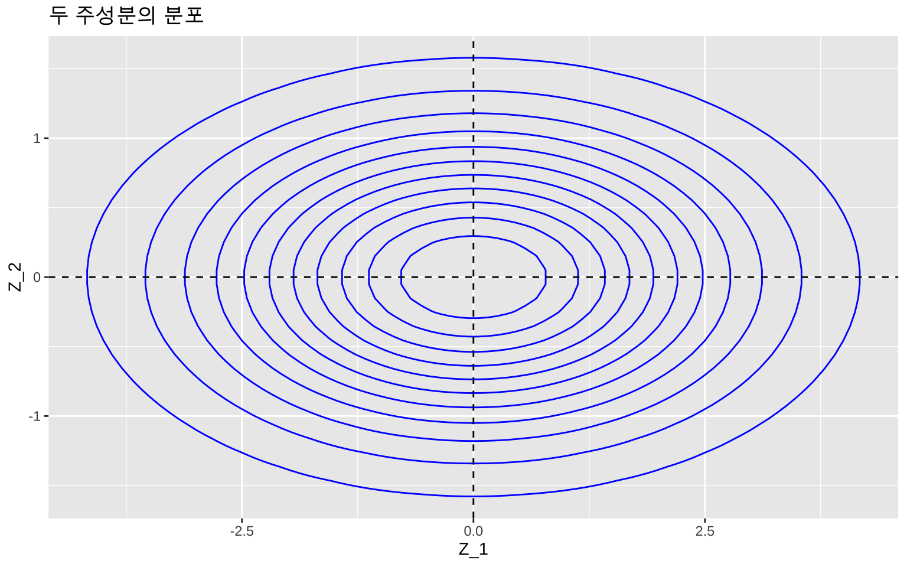
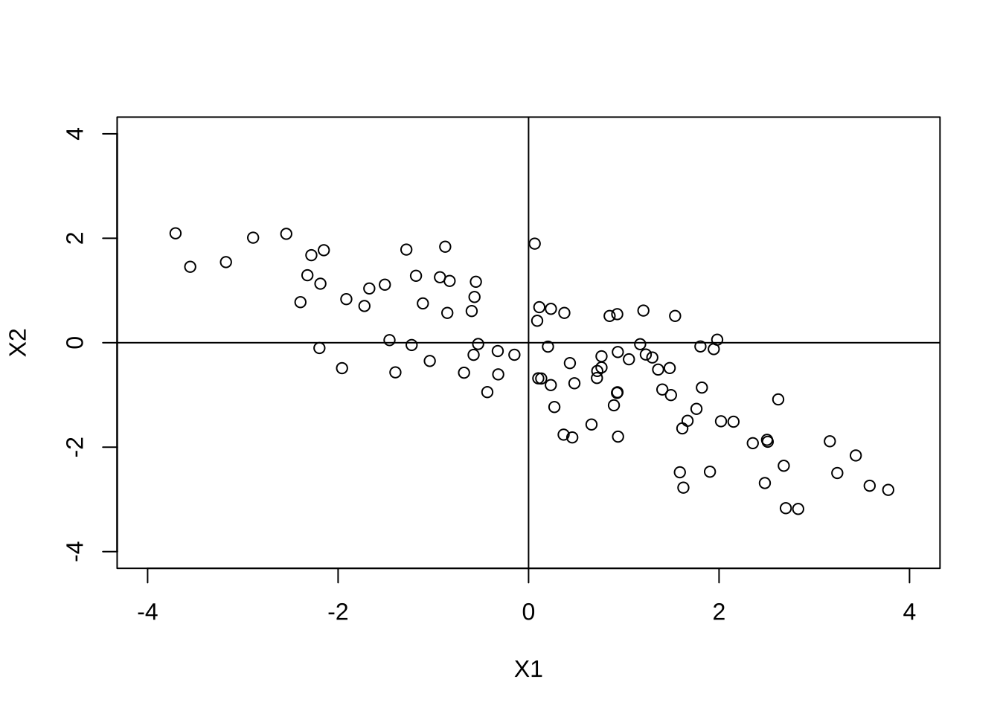
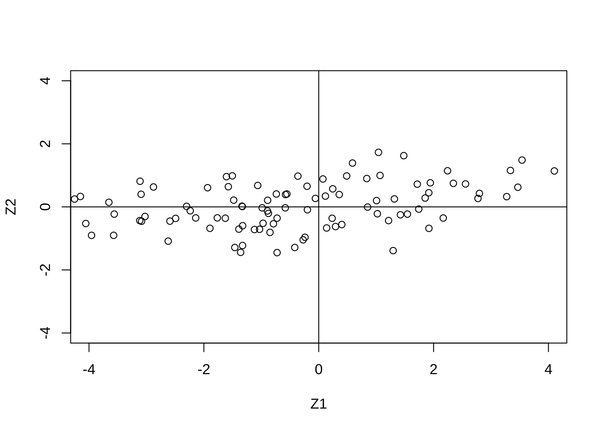

library(tidyverse)
library(here)
library(knitr)
library(mvtnorm)
#아래 3 문장은 한글을 포함한 ggplot 그림이 포함된 HTML, PDF로 만드는 경우 사용
library(showtext)
#font_add_google("Nanum Pen Script", "gl")
font_add_google(name = "Noto Sans KR", family = "noto")
showtext_auto()6 주성분 분석
다변량 데이터를 다룰 때 문제점 중 하나는 단순히 변수가 너무 많아 데이터에 대한 유익한 초기 평가를 성공적으로 수행하기 어렵다는 점이다. 변수들 사이의 복잡한 상관관계는 분석에 어려움을 더한다. 또한 변수가 너무 많으면 연구자가 데이터에 적용하고자 하는 다른 다변량 기법에도 문제를 일으킬 수 있다.빅데이터가 흔한 시데에 데이터는 넘쳐나지만, 그 속에서 진짜 중요한 정보를 찾아내는 일은 점점 더 어려워지고 있다.
주성분 분석(PCA, Principal Component Analysis)은 단순히 하나의 통계 기법을 넘어, 데이터를 이해하는 새로운 방식을 제시한다. 주성분 분석은 다변량 자료의 변수들 속에 숨어 있는 공통된 구조를 발견하고, 이를 소수의 새로운 변수로 변환하는과정이다. 수십 개의 변수를 그대로 바라보면 혼란스러울 뿐이다. PCA는 이 변수들을 새로운 좌표계로 옮겨, 가장 큰 변동을 담아내는 방향으로 새로운 변수를 찾아낸다. 첫 번째 주성분이 데이터의 전체 흐름을 포착하고, 두 번째 주성분이 남은 변동을 설명한다. 이렇게 서로 직교하는 변수들이 순차적으로 만들어지면서, 데이터가 가지고 있는 변동을 2-3 개의 새로운 변수로 단순하게 많느 부분을 설명할 수 있다.
주성분 분석의 목적은 분명하다. 첫째, 차원을 축소하여 핵심적인 소수의 변수들만 남기는 것이다. 복잡한 다변량을 2-3 개의 주성분으로 요약하면, 분석은 훨씬 단순해진다. 주성분 분석은 자료가 많은 수의 변수들(Variables)로 구성되어 있는 경우 적은 개수의 변수로 자료의 차원을 축소하는 것이 주요한 목적이다(Dimension Reduction). 또한 이렇게 차원을 축소하는 경우 원래 변수들이 가지고 있던 변동(Variation)을 차원이 축소된 경우에도 최대한 유지할 수 있도록 한다.
둘째로 주성분 분석은 데이터의 시각화를 더욱 쉽게 수행할 수 있다. 수십 차원의 세계를 2차원, 3차원으로 투영해 보면, 군집은 또렷해지고 이상치는 드러난다. 셋째, 주어진 변수들의 복잡한 상관관계를 검토하고 분석할 필요가 없어진다. 서로 얽힌 변수들을 직교하는 주성분으로 바꿔놓으면, 다중공선성이라는 문제는 자연스레 사라진다.
주성분 분석은 특정 학문에만 국한되지 않는다. 사회과학에서 복잡한 설문 문항을 요약하는 데, 생물학에서 유전자 발현 데이터의 패턴을 찾는 데, 경영학에서 고객 행동의 핵심 요인을 도출하는 데, 더 나아가 인공지능에서 이미지나 텍스트의 고차원 정보를 다루는 데까지, 그 쓰임새는 한계가 없다.
6.1 이변량 확률벡터의 변환
6.1.1 이변량 정규분포
먼저 주성분분석의 기본개념을 이해하기 위하여 다음과 같은 평균 \(\pmb \mu\)인 이차원 확률벡터 \(\pmb X =(X_1, X_2)^t\) 가 아래와 같이 공분산을 가지는 정규분포를 따른다고 하자.
\[ \pmb X \sim N_2( \pmb \mu, \pmb \Sigma), \quad E(\pmb X) = \pmb \mu = \begin{bmatrix} \mu_1 \\ \mu_2 \end{bmatrix}, \quad \pmb \Sigma = V(\pmb X) = \begin{bmatrix} \sigma_{11} & \sigma_{12} \\ \sigma_{12} & \sigma_{22} \\ \end{bmatrix} \]
확률벡터 \(\pmb X\)의 상관계수행렬 \(\pmb C\) 는 다음과 같이 표시한다. \[ \pmb C = \begin{bmatrix} 1 & \rho \\ \rho & 1 \\ \end{bmatrix}, \quad \rho = \frac{\sigma_{12}}{ \sqrt{\sigma_{11} \sigma_{22}}} \]
참고할 사항은 상관계수행렬은 표준화된 확률변수 \(Z_i = (X_i - \mu _i)/\sqrt{\sigma_{ii}}\)의 공분산 행렬이다. 이유는 다음과 같이 보일 수 있다. 일단 표준화된 확률벡터 \(\pmb Z = (Z_1, Z_2)^t\)를 정의하자.
\[ \pmb Z = \begin{bmatrix} (X_1 - \mu _1)/\sqrt{\sigma_{11}} \\ (X_2 - \mu _2)/\sqrt{\sigma_{22}} \end{bmatrix} = \begin{bmatrix} 1/\sqrt{\sigma_{11}} & 0 \\ 0 & 1/\sqrt{\sigma_{22}} \\ \end{bmatrix} \begin{bmatrix} (X_1 - \mu _1) \\ (X_2 - \mu _2) \end{bmatrix} = \pmb D (\pmb X - \pmb \mu) \] 여기서 \(\pmb D\)는 각 변수의 표준편차의 역수를 대각원소로 가지는 대각 행렬이다. 표준화된 확률벡터 \(\pmb Z\)의 공분산은 다음과 같이 유도된다.
\[ \begin{aligned} V(\pmb Z ) &= E( [\pmb D (\pmb X - \pmb \mu)] [\pmb D (\pmb X - \pmb \mu)]^t ) \\ &= \pmb D E( (\pmb X - \pmb \mu) (\pmb X - \pmb \mu)^t ) \pmb D^t \\ &= \pmb D \Sigma \pmb D^t \\ &= \begin{bmatrix} 1/\sqrt{\sigma_{11}} & 0 \\ 0 & 1\sqrt{\sigma_{22}} \\ \end{bmatrix} \begin{bmatrix} \sigma_{11} & \sigma_{12} \\ \sigma_{12} & \sigma_{22} \\ \end{bmatrix} \begin{bmatrix} 1/\sqrt{\sigma_{11}} & 0 \\ 0 & 1\sqrt{\sigma_{22}} \\ \end{bmatrix} \\ &= \begin{bmatrix} 1 & \rho \\ \rho & 1 \\ \end{bmatrix} \end{aligned} \]
6.1.2 주성분의 기준과 생성방법
일반적으로 주성분 분석에서는 확률벡터 \(\pmb X\)의 평균이 \(\pmb 0\)이라고 가정한다. 주성분 분석은 원래 변수들의 위치(location, 즉 평균)에 영향을 받는 방법이 아니라 자료의 변동(variation, 즉 분산)을 최대로 유지하는 새로운 변수를 만드는 것이 목적이다. 따라서 평균이 \(\pmb 0\)이 아닌 확률벡터 \(\pmb X_*\)도 그 평균을 뺀 벡터 \(\pmb X\)로 변환하여 평균을 \(\pmb 0\)으로 만들고 주성분분석을 적용한다.
\[ \text{Let } \pmb X = \pmb X_* - E(\pmb X_* )=\pmb X_* - \pmb \mu_* ,
\text{ then } E(\pmb X)=0, ~~ V(\pmb X) = V(\pmb X_*) \] 아래부터는 특별한 언급이 없으면 확률벡터 \(\pmb X\)가 평균이 \(\pmb 0\)이라고 가정한다.
이제 평균이 0이고 공분산(상관계수행렬)이 다음과 같이 주어지는 이변량정규분포를 생각해보자. \[ \pmb \Sigma = \begin{bmatrix} 2 & 1.5\\ 1.5 & 2 \end{bmatrix} \tag{6.1}\]
참고로 두 변수의 상관계수는 \(\rho = 1.5/2 = 0.75\) 이다
R 의 패키지 중 mtvnorm 을 사용하면 다변량분포에 대한 다양한작업을 손쉽게 할 수 있다. 다음 R 프로그램은 위에 주어진 공분산행렬 을 가지는 이변량정규분포 화률밀도함수의 2차원 등고선그림이다.
library(mvtnorm)
library(ggplot2)
library(dplyr)
#### 평균과 공분산
mu <- c(0, 0)
sigma <- matrix(c(2, 1.5, 1.5, 2), nrow = 2)
# grid 만들기
x.points <- seq(-4, 4, length.out = 100)
y.points <- seq(-4, 4, length.out = 100)
grid <- expand.grid(x1 = x.points, x2 = y.points)
#### 확률밀도 계산
grid$z <- dmvnorm(grid[, c("x1", "x2")], mean = mu, sigma = sigma)
#### ggplot으로 contour 그리기
p <- ggplot(grid, aes(x = x1, y = x2, z = z)) +
geom_contour(color = "black") +
geom_hline(yintercept = 0, linetype = "dashed") +
geom_vline(xintercept = 0, linetype = "dashed") +
geom_abline(slope = 1, intercept = 0, color = "red" ,linewidth = 1.5) +
geom_abline(slope = -1, intercept = 0, color = "blue",linewidth = 1.5) +
geom_abline(slope = 1.5, intercept = 0, color = "black") +
geom_abline(slope = 0.5, intercept = 0, color = "black") +
labs(x = "X_1", y = "X_2", title = "이차원 정규분포의 확률빌도함수(rho = 0.75) ")
print(p)
위의 그림에서 이차원 평면 상의 이차원 정규분포 밀도함수 등고선을 보면 분포의 퍼진 정도가 가장 큰 방향의 축이 원점을 지나고 기울기가 1 인 직선임을 알 수 있다(빨간 색 직선) 또한 이 직선과 직교하는 선은 원점을 지나고 기울기가 -1 인 직선임을 알 수 있다(파란 색 직선 )
이제 각 확률변수 \(X_i\) 의 선형 변환으로 새로운 확률변수 \(Z_i\) 를 다음과 같이 정의한다.
\[ Z_1 = a_{11} X_1 + a_{12} X_2, \quad Z_2 = a_{21} X_1 + a_{22} X_2 \] 새로운 확률벡터 \(\pmb Z =(Z_1, Z_2)^t\) 는 다음과 같이 표시할 수 있다. \[ \pmb Z = \pmb A \pmb X \text{ where } \pmb A = \begin{bmatrix} a_{11} & a_{12} \\ a_{21} & a_{22} \end{bmatrix} \tag{6.2}\]
이렇게 새로운 확률 변수 \(Z_i\)를 만들 때 첫번째 변수 \(Z_1\) 를 첫번째 주성분(the 1st Principal Component)이라고 하며 원래 확률 벡터 \(\pmb X\)가 가지는 총 변동 중에 최대한 큰 변동을 가질 수 있도록 만들고(빨간 색 직선 방향) 두번째 변수 \(Z_2\) 를 두번째 주성분(the 2nd Principal Component) 이라고 부르고 첫번째 변수 \(Z_1\)과 공분산이 0 이면서 나머지 변동을 가질 수 있도록(파란색 직선 방향) 만드는 방법이 주성분(principal components)을 만드는 기준이다.
- \(\max V(Z_1)\)
- \(Cov(Z_1,Z_2) =0\)
- \(V(Z_1) + V(Z_2) = V(X_1) + V(X_2)\)
위의 조건을 만족하는 선형변환 \(\pmb Z\)는 공분산행렬 \(\pmb \Sigma\)의 고유값과 고유벡터로 구할 수 있다. 식 6.1 에 주어진 공분산행렬은 양정치 행렬이므로 고유값(eigen value) \(\lambda_1 > \lambda_2>0\)가 모두 양수이고 각 고유치에 대응하는 정규 직교 고유벡터(orthonormal eigen vector)의 행렬 \(\pmb P\)을 이용하여 다음과 같은 분해가 가능하다.
\[ \Sigma = \pmb P \pmb \Lambda \pmb P^t \tag{6.3}\]
여기서 식 6.1 에 대해서 식 6.3 에 주어진 행렬의 분해를 구해보면 아래와 같다.
\[ \pmb \Lambda = \begin{bmatrix} \lambda_1 & 0\\ 0 & \lambda_2 \end{bmatrix} = \begin{bmatrix} 7/2 & 0\\ 0 & 1/2 \end{bmatrix} , \quad \pmb P = \begin{bmatrix} 1/\sqrt{2} & -1/\sqrt{2}\\ 1/\sqrt{2} & 1/\sqrt{2} \end{bmatrix} \] 식 6.2 에서 정의된 선형변환을 다음과 같이 정의하면
\[ \pmb A = \pmb P^t \text{ so that } \pmb Z = \pmb P^t \pmb X \] 주성분은 다음과 같이 만들어 진다. \[ Z_1 = \frac{1}{\sqrt{2}} X_1 + \frac{1}{\sqrt{2}} X_2, \quad Z_2 = -\frac{1}{\sqrt{2}} X_1 + \frac{1}{\sqrt{2}} X_2 \]
이렇게 만들어진 주성분 벡터의 공분산 행렬을 구해보자
\[ \begin{aligned} V(\pmb Z) & = V(\pmb P^t \pmb X) \\ & = \pmb P^t V(\pmb X) \pmb P \\ & = \pmb P^t \pmb \Sigma \pmb P \\ & = \pmb P^t \pmb P \pmb \Lambda \pmb P^t \pmb P \\ & = \pmb \Lambda \end{aligned} \]
위의 유도식에서 정규직교 고유벡터 \(\pmb P\)는 직교행렬이므로 (i.e. \(\pmb P^t \pmb P=\pmb I\))
\[ V(\pmb Z) = \pmb \Lambda = \begin{bmatrix} 7/2 & 0\\ 0 & 1/2 \end{bmatrix} \] 따라서 첫번째 주성분의 분산은 가장 큰 고유치가 되고 두 번째 주성분의 분산은 두 번째 고유치가 되며 두 주성분의 공분산은 0이고 정규분포이므로 독립이다. \[ \pmb Z \sim N_2( \pmb 0 , \pmb \Lambda) \] 또한 다음의 관계가 성립한다.
\[ V(Z_1)=3.5,~~ V(Z_2)=0.5,~~ Cov(Z_1,Z_2) =0,~~ V(Z_1) + V(Z_2) = V(X_1) + V(X_2) \]
다음은 주성분 벡터 \(\pmb Z\)의 이변량정규분포의 2차원 등고선그림이다.
# 평균 벡터와 공분산 행렬
mu <- c(0, 0)
sigma1 <- matrix(c(3.5, 0,
0, 0.5), nrow = 2)
# x, y 격자 만들기
x.points <- seq(-5, 5, length.out = 100)
y.points <- seq(-5, 5, length.out = 100)
grid <- expand.grid(x = x.points, y = y.points)
# 이변량 정규분포 밀도 계산
grid$z <- dmvnorm(cbind(grid$x, grid$y), mean = mu, sigma = sigma1)
# ggplot2 시각화
p <- ggplot(grid, aes(x = x, y = y, z = z)) +
geom_contour(color = "blue") +
geom_hline(yintercept = 0, linetype = "dashed") +
geom_vline(xintercept = 0, linetype = "dashed") +
labs(x = "Z_1", y = "Z_2", title = "두 주성분의 분포")
print(p)
위와 같이 만든 첫번째 주성분은 원래 변수가 가지고 있는 총변동 \(V(X_1)+V(X_2) = 4\)의 85.7%를 설명한다.
\[ \frac{V(Z_1)}{V(X_1)+V(X_2)} = \frac{V(Z_1)}{V(Z_1)+V(Z_2)} = \frac{\lambda_1}{\lambda_1+\lambda_2} = \frac{3.5}{4} = 0.857 \]
원래의 두 변수 \(X_1\)과 \(X_2\)를 모두 사용하지 않고 하나의 주성분 \(Z_1\)만으로서 분포의 전체 변동의 큰 부분(85.7%)을 설명할 수 있다. 이러한 논리가 주성분을 이용한 차원의 축소이다.
6.1.3 상관계수행렬을 통한 주성분분석
각 변수는 숫자로 나타나므로 측정할 경우 그 단위(unit)가 있다. 하지만 측정 단위들은 변수에 따라 또는 측정하는 사람에 따라 다를 수 있다. 예를 들어 키를 측정하는 경우 센티미터(cm)를 사용하고 몸무게를 측정하는 경우 킬로그램(Kg)를 사용한다. 또한 같은 변수인 키를 측정하는 경우에 센티미터(cm)대신 미터(m)를 사용할 수도 있다.
공분산행렬은 각 변수의 측정단위에 따라 변하며 그에 따른 고유값과 고유벡터도 변한다. 즉 주성분분석은 변수의 측정 단위에 따라 변할 수 있다.
예를 들어 식 6.1 을 공분산으로 가지는 확률벡터에서 첫번째 확률변수 \(X_1\)를 키라고 하고 그 측정단위가 미터(m)라고 가정하자. 만약 키의 측정단위를 센티미터로 바꾼다면 \((100 \times X_1)\) 단위가 바뀐 확률벡터의 공분산행렬은 다음과 같이 변한다.
\[ \pmb \Sigma = \begin{bmatrix} (10000)(2) & (100)(1.5)\\ (100)(1.5) & 2 \end{bmatrix} = \begin{bmatrix} 20000 & 150\\ 150 & 2 \end{bmatrix} \tag{6.4}\]
위에서 변환된 공분산행렬의 고유값과 고유벡터를 구해보면 다음과 같다.
sigma <- matrix(c(20000,150,150,2),nrow=2) # 공분산행렬
sigma [,1] [,2]
[1,] 20000 150
[2,] 150 2eigen(sigma)eigen() decomposition
$values
[1] 2.000113e+04 8.749508e-01
$vectors
[,1] [,2]
[1,] -0.999971874 0.007500117
[2,] -0.007500117 -0.999971874가장 큰 고유치는 \(\lambda_1= 20000\)에 가깝고 다음 고유치는 거의 0이다 (\(\lambda_2 \sim 0\)) 또한 고유벡터는 거의 단위행렬에 가까우므로 첫번째 주성분은 키를 나타내는 원래 변수와 동일하고(부호만 바뀐다) 전체 변동을 대부분 설명하며 두번째 주성분은 거의 설명하는 변동이 없게된다.
위와 같은 현상은 공분산행렬을 주성분분석에 사용하는 경우에 나타나는 큰 문제점이다. 많은 경우 변수들은 측정단위가 다르며 단위를 바꾸면 주성분이 크게 변한다. 이러한 분제점을 해결하기 위하여 많은 경우 각 변수를 표준화하여 사용하는 것이 좋다. 표준화하면 각 변수가 가지는 변동이 같게되며 서로의 관계는 상관계수로 파악할 수 있다. 앞에서 표준화된 변수들의 공분산행렬은 상관계수행렬임을 보였다. 따라서 특별한 이유가 없는 한 주성분분석은 상관계수 행렬을 사용한다.
만약 두개의 확률벡터가 각각 식 6.1 과 식 6.4 를 공분산으로 갖는다고 가정하자. 두 공분산행렬은 다르지만 상관계수행렬은 같음을 알수 있다.
\[ \pmb C =\begin{bmatrix} 1 & \rho \\ \rho & 1 \\ \end{bmatrix} = \begin{bmatrix} 1 & 0.75 \\ 0.75 & 1 \\ \end{bmatrix} \tag{6.5}\]
따라서 단위의 종류와 변환에 관계없이 같은 주성분을 가진다.
sigma <- matrix(c(1,0.75,0.75,1),nrow=2) # 상관계수행렬(상관계수=0.75)
eigen(sigma)eigen() decomposition
$values
[1] 1.75 0.25
$vectors
[,1] [,2]
[1,] 0.7071068 -0.7071068
[2,] 0.7071068 0.7071068위에서 구한 고유치와 고유벡터를 사용한 주성분과 그 통계적 성질은 다음과 같다.
\[ Z_1 = \frac{1}{\sqrt{2}} X_1 + \frac{1}{\sqrt{2}} X_2, \quad Z_2 = -\frac{1}{\sqrt{2}} X_1 + \frac{1}{\sqrt{2}} X_2 \] \[ V(Z_1)=1.75,~~ V(Z_2)=0.25,~~ Cov(Z_1,Z_2) =0,~~ V(Z_1) + V(Z_2) = V(X_1) + V(X_2)=2 \]
참고할 점은 상관계수행렬의 대각의 합은 변수의 개수(\(p=2\))와 같고 상관계수가 변한다 하더라도 고유벡터들는 변하지 않아 주성분은 동일하게 정의되지만 각각의 분산은 달라진다. 아래는 상관계수 \(0.95\)를 가지는 상관계수행렬의 고유치와 고유값이다.
sigma <- matrix(c(1,0.95,0.95,1),nrow=2) # 상관계수행렬(상관계수=0.95)
sigma [,1] [,2]
[1,] 1.00 0.95
[2,] 0.95 1.00eigen(sigma)eigen() decomposition
$values
[1] 1.95 0.05
$vectors
[,1] [,2]
[1,] 0.7071068 -0.7071068
[2,] 0.7071068 0.70710686.1.4 표본자료를 이용한 주성분분석
이변량 정규분포에서 \(n\)개의 자료 \(\pmb X_1, \pmb X_2, \dots, \pmb X_n\)이 독립표본으로 추출되었다면 표본공분산과 표본상관계수를 추정하여 주성분을 만들 수 있다.
\[ \hat {\pmb \Sigma } = \begin{bmatrix} \hat \sigma_{11} & \hat \sigma_{12} \\ \hat \sigma_{12} & \hat \sigma_{22} \\ \end{bmatrix} \quad \hat{\pmb C} = \begin{bmatrix} 1 & \hat \rho \\ \hat \rho & 1 \\ \end{bmatrix} \]
다음은 평균이 \(\pmb 0\) 이고 다음을 공분산으로 가지는 이변량 정규분포에서 50개의 표본을 추출하고 표본상관계수를 추정하여 주성분을 만드는 R 프로그램이다. \[
\pmb \Sigma =
\begin{bmatrix}
3 & -2 \\
-2 & 2 \\
\end{bmatrix}
\]
mu <- c(0,0) # 평균 벡터
sigma <- matrix(c(3,-2,-2,2),nrow=2) # 공분산행렬
X <- rmvnorm(100,mean=mu,sigma=sigma)
head(X) [,1] [,2]
[1,] 4.6282705 -4.2243072
[2,] 1.4045731 -0.8958122
[3,] 0.4338715 -0.3901536
[4,] 0.9394071 -1.7978767
[5,] -2.1498722 1.7714280
[6,] 3.1633948 -1.8869771C <- cor(X)
C [,1] [,2]
[1,] 1.0000000 -0.8164816
[2,] -0.8164816 1.0000000eigen(C)eigen() decomposition
$values
[1] 1.8164816 0.1835184
$vectors
[,1] [,2]
[1,] -0.7071068 -0.7071068
[2,] 0.7071068 -0.7071068위의 결과로 주성분은 다음과 같이 주어진다.
\[ Z_1 = - 0.707 X_1 + 0.707 X_2 \quad Z_2 = - 0.707 X_1 - 0.707 X_2 \]
첫번째 주성분의 분산이 \(V(Z_1)=\lambda_1=1.816\) 이므로 총변동 \(p=2\) 의 91%를 설명한다.
원래 자료 \((X_1, X_2)\)의 산점도와 위의 식에 원래 자료를 넣어 계산된 주성분의 값 \((Z_1,Z_2)\) 산점도는 다음 그림과 같다.
P <- eigen(C)$vectors
Z <- X %*% P
plot(X, xlab="X1",ylab="X2",ylim=c(-4,4),xlim=c(-4,4))
abline(v=0);abline(h=0)
plot(Z, xlab="Z1",ylab="Z2",ylim=c(-4,4),xlim=c(-4,4))
abline(v=0);abline(h=0)